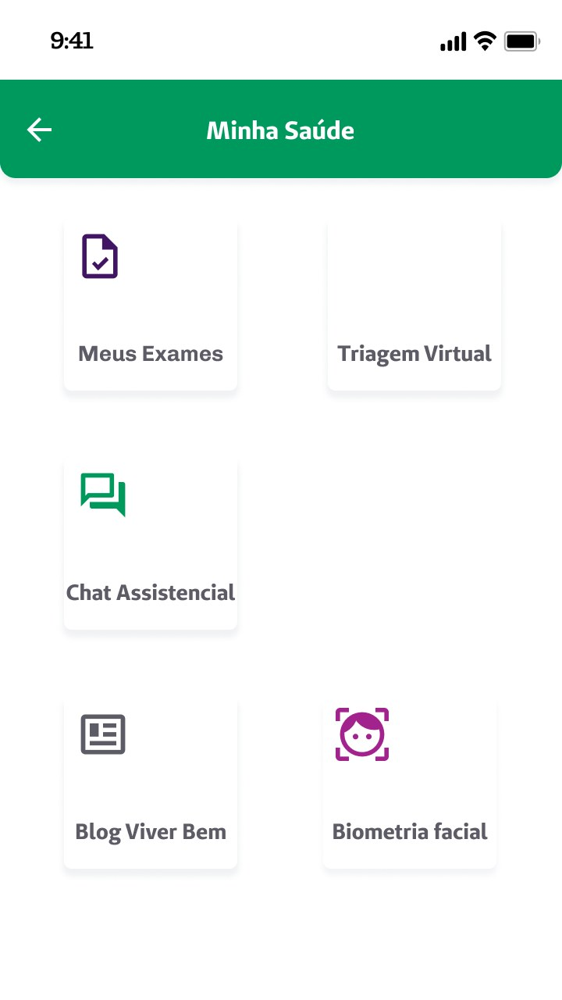
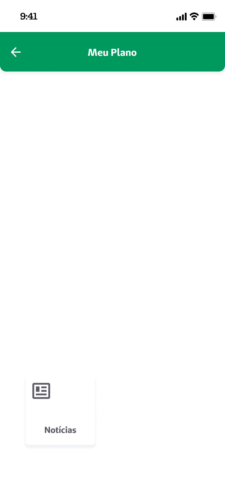
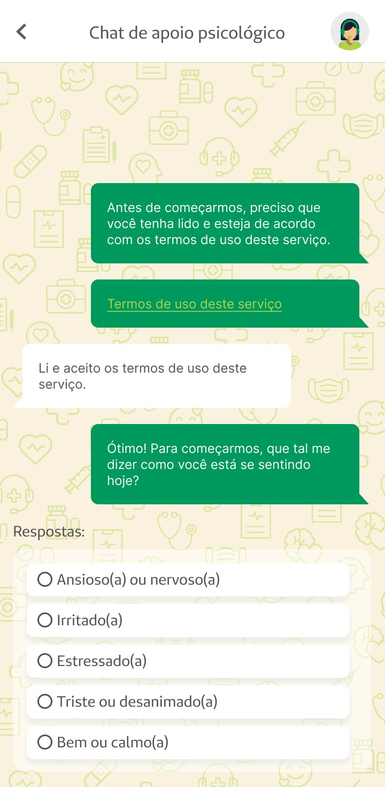
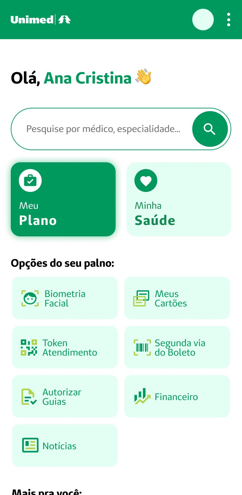
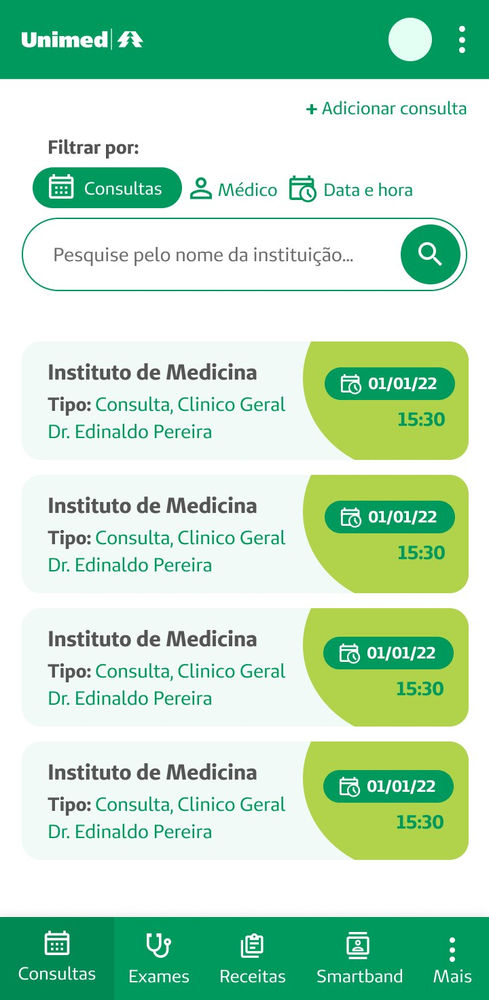
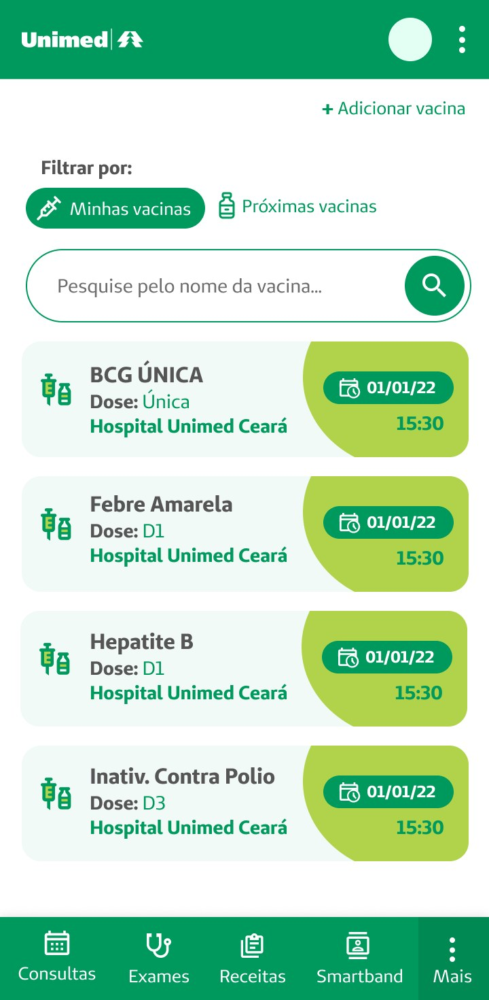
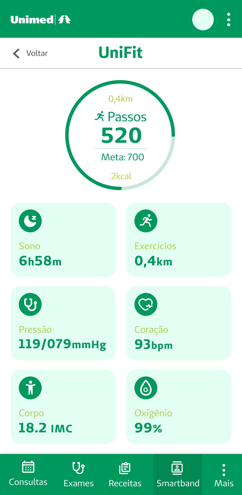

Project 04 · Healthcare app
Unimed: Scaling a Healthcare App for 50K+ Users
Unimed's app is where members book appointments, check exam results, manage vaccines, and track their health through UniFit. My job was to lead the redesign and build the design system that let the whole product scale without falling apart.
Section
Context
A super app that grew faster than its design language.
The app had grown feature by feature over the years, consultations, exams, prescriptions, vaccines, a health tracker, a psychological support channel, each one shipped by a different squad, on its own timeline. The result was an app that technically worked, but felt like several different products stitched together.
The problem: icon styles, card layouts and spacing were inconsistent from screen to screen, and some flows had literal dead ends, empty states with a single card floating in an otherwise blank screen. That inconsistency was not just a visual issue, it was slowing every squad down, since every new feature meant deciding the visual language from scratch.


Two real screens from the legacy app: mismatched icon styles and an information architecture that occasionally broke down into near-empty screens.
Section
Design system
Fixing the screens was easy. Fixing why they diverged was the real job.
Redesigning individual screens would not have solved anything, the next squad would have drifted from them again within a quarter. So I led the creation of a scalable design system: tokens, components and usage guidelines shared across every squad working on the app.
Mapped every screen in production, cataloguing every icon style, card pattern and spacing value actually in use, not just the ones in the old style guide.
Consolidated everything into a single token set and a component library, with clear rules for when and how each one should be used.
Worked directly with each squad during adoption, reviewing their screens against the system instead of just publishing documentation and hoping it would be followed.
The result: inconsistencies and delivery time both dropped by 40% across squads, since designers stopped reinventing basic patterns for every new feature.
Section
A/B testing the home screen
Conversational or task-oriented? We actually tested it.
One open question going into the redesign was how directive the home screen should feel. We built two real directions and tested them: version A led with a conversational, chat-style entry point, version B led with a task-oriented card dashboard.


Version B won for the home screen: returning members overwhelmingly wanted to jump straight to a specific service, not have a conversation to get there. But the conversational pattern was not wasted, we kept it for a context where it genuinely fit better: the psychological support chat, a sensitive entry point where guiding someone through a few questions before showing options actually made people more comfortable, not less efficient.
Section
Core features, rebuilt on the system
Same design system, different jobs to do.
Once the system was in place, we rebuilt the core flows on top of it: booking and tracking consultations, managing vaccine records, and UniFit, a health tracker that pulls together steps, sleep, blood pressure and heart rate in one view.



Results and reflection
A system that outlives the redesign.
- 50,000+ users impacted across the redesigned flows
- 40% reduction in inconsistencies and delivery time across squads
- One shared design system adopted across every squad
- Onboarding and navigation flow improved for the UniFit tracker
The lesson that stuck with me: a redesign that only touches pixels gets undone by the next roadmap. What actually lasts is the system underneath it, and the relationships with the squads who have to live with it every day.
Note: some business information was adapted to preserve confidential details. Names and sample data shown in the screens are for demonstration purposes only.
Want to see another project?
There is also a banking case with Banco do Brasil and a loyalty program case with Gol in the portfolio.
View all projects